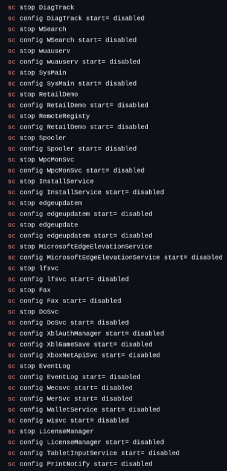

Its a fast and morden Windows deployment
----------------------
Easy install:
Get the latest release(s) at:
https://github.com/KrypProjects/GarbanzoEMOS/releases/tag/0.1
----------------------
Non-easy install:
If you want install it manual, OK. but you only need TrackerDisable.reg, oldfetch.cmd and theme.
----------------------
Make sure that you have downloaded 'TrackerDisable.reg'
Open the 'TrackerDisable.reg' file and click 'Yes' to change the registry.
----------------------
Open CMD as admin and look at the image:

This will disable most services.
----------------------
Make sure that you have downloaded 'TrackerDisable.reg'
----------------------
If you don't want to remove Microsoft Edge, then skip this step and move on to the next step.
To remove Microsoft Edge, make sure that CMD is opened as admin and type this:
cd %userprofile%\AppData\Local\Microsoft taskkill /f /im msedge.exe taskkill /f /im MicrosoftEdgeUpdate.exe rmdir /s /q "Edge" rmdir /s /q "EdgeCore" rmdir /s /q "EdgeUpdate" cd "C:\Program Files (x86)\Microsoft\" rmdir /s /q "Edge" rmdir /s /q "EdgeCore" rmdir /s /q "EdgeUpdate" reg delete "HKLM\SOFTWARE\Microsoft\Edge" /f reg delete "HKLM\SOFTWARE\Microsoft\EdgeUpdate" /f reg delete "HKLM\SOFTWARE\Microsoft\EdgeCore" /fOnce done, Microsoft Edge is removed.
----------------------
Make sure that you have downloaded the '.deskthemepack' file on https://github.com/KrypProjects/GarbanzoEMOS/tree/main/Theme
Open the '.deskthemepack' file and... poof, theme applyed!
----------------------
If you have a oldfetch.cmd downloadeed, move it to C:\Windows and thats it.
----------------------
Now that you are done installing GarbanzoEMOS, reboot your computer to take effect and finsh the installtion!
----------------------